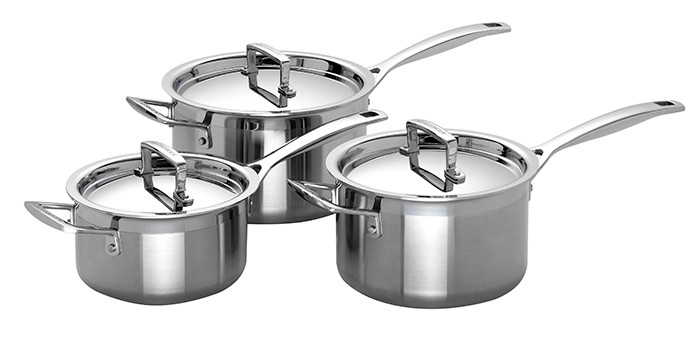
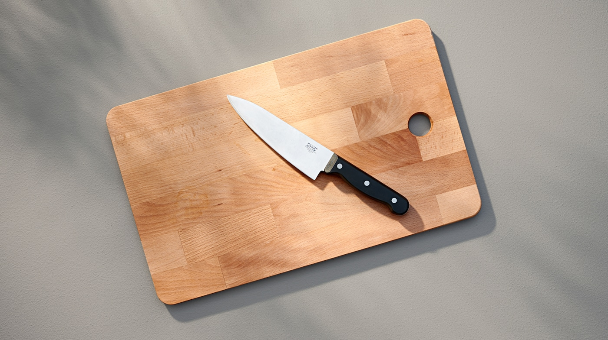
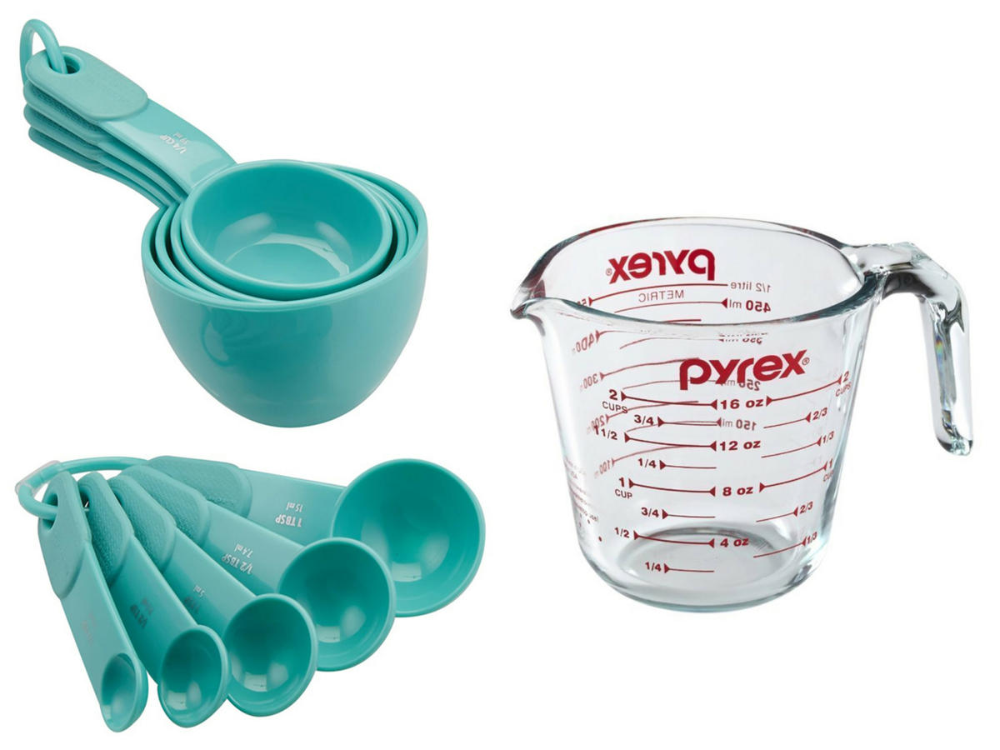
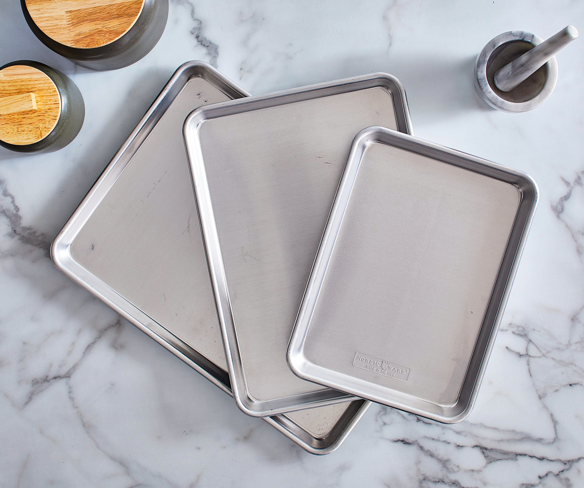
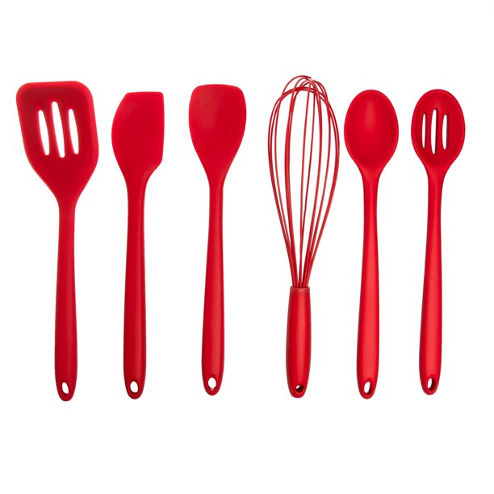

Back
Utilities
Saucepans

Saucepans are deep pans that can be used to boil water, make sauces and soups.
They can come in many different sizes and are made of metal.
Shop
Knives & Cutting Board

Knives are used to cut, chop, slice, and dice many different types of food
like vegetables or meat. A cutting board is used as a surface to prepare food.
Shop
Measuring Spoons & Cups

Measuring spoons and cups are used to precisely measure ingredients
when cooking or baking. There are different cups for measuring liquid or dry ingredients.
Shop
Sheet Trays

Sheet Trays or Baking Sheets are flat metal pans used in ovens. They can
be used to bake cookies, roast vegetables, or make pizzas.
Shop
Spoons, Whisk, & Spatula

There are many different types of spoons used to cook meals like ladles and mixing
spoons. A whisk is used to stir, blend, whip, or mix ingredients together. A spatula is used to lift, spread, or
turn food.
Shop